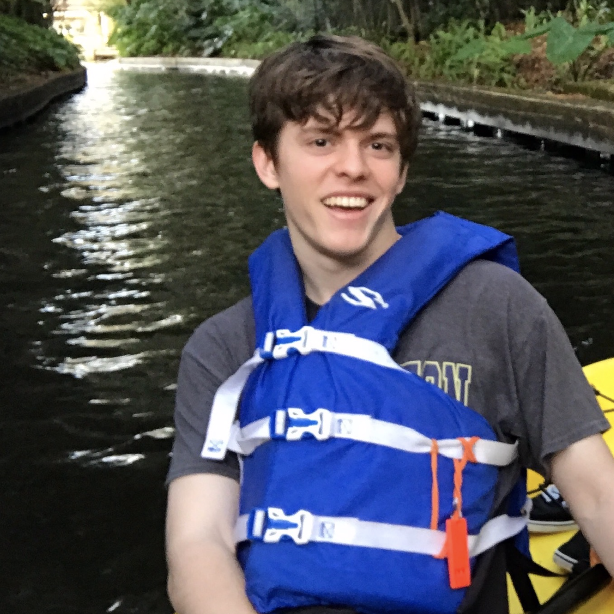
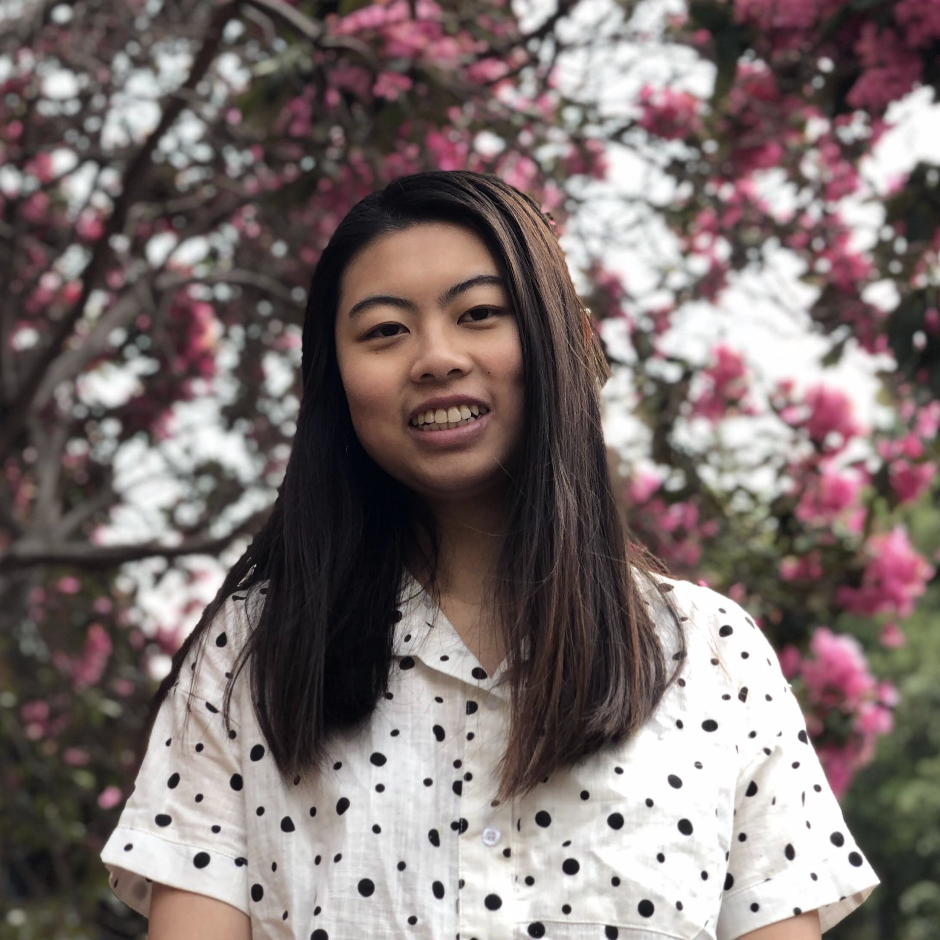
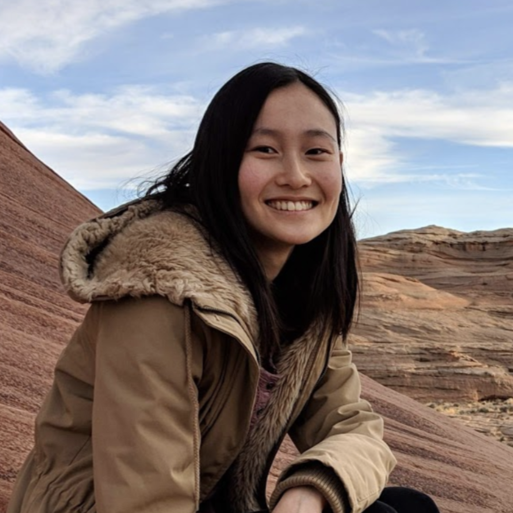

Instructor |
|||||
  |
Victor Huang
vhuang (at) eecs.berkeley.edu
|
||||
TAs |
|||||
|

|
Joe Deatrick
jldeatrick (at) berkeley.edu
Classes TA'd: CS 61B/L, CS 61C Hey Folks! My name is Joe, and I’m a senior CS major from Florida. I like cryptography, computer security, and (most of all) teaching! When I’m not doing any of those things, I like to play/collect old Nintendo games and listen to 70's prog rock. Teaching was the best part of my time at Berkeley, so I look forward to meeting you all! |

|
Erica Kong
waikeikong (at) berkeley.edu
Classes TA'd: CS 61A, CS 61B Hello! I’m very excited to help out with 375 this summer! I’ve taught 61A and 61B, and I absolutely love teaching both! I took 375 last summer! Besides teaching, I like to listen to music and learn new instruments. Let me know if you have any questions about teaching and/or want to talk about music! |
||
|
Suraj Rampure
suraj.rampure (at) berkeley.edu
Classes TA'd: CS 61A, CS 70, Data 8, Data 100 Hey! I’m a rising senior EECS major. Though I'm a proud Canadian (from Windsor, Ontario), I enjoy rooting for whatever team LeBron plays for — go |
Itai Smith
iasmith (at) berkeley.edu
Classes TA'd: CS 61B/L Hi there! My name is Itai and I’m a rising fourth year CS major. I love teaching CS, and I’m excited to meet as many of you as possible! |
||||
|

|
Jennifer Tsui
jtsui (at) berkeley.edu
Classes TA'd: CS 61A Hi I'm Jennifer! I TA'd for 61A previously and am excited to be helping out for CS375 and reading your self reflections!! Looking forward to a great summer with everyone!!! |